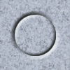

<map name="testmap1">
    <area href="http://google.ru" shape="circle" coords="50,50,29" alt="Область в виде окружности" />
</map>

<!--

<map> - описывает карту ссылок, name - имя карты ссылок
<area> - описывает "горячие области"
href - адрес ресурса, на который указывает область
shape - форма области (окружность, прямоугольник, многоугольник)
coords - координаты области - x, y, radius
alt - описание области

-->


